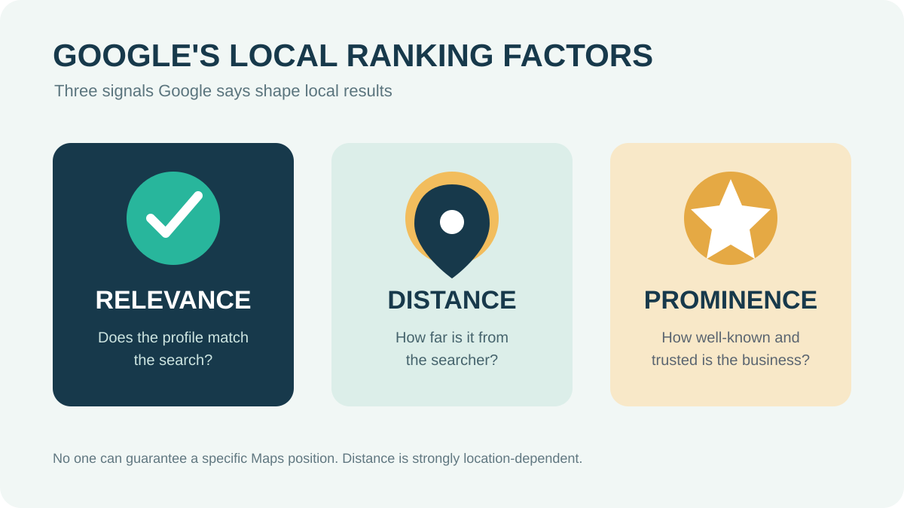
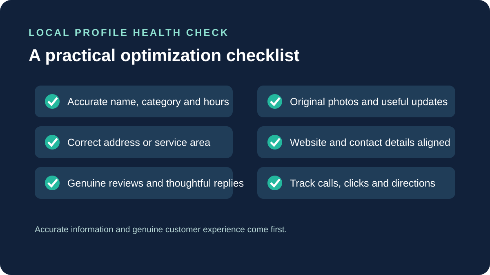

1. Understand how Google local results work
Google says local results are mainly based on three factors: relevance, distance and prominence. Relevance is how well a profile matches a search; distance is how far the business is from the searcher or the location used in the query; prominence reflects how well-known a business is, using information such as links and reviews. These factors help explain local results, but Google does not publish a formula or guarantee a particular ranking.

2. Set up and verify your Google Business Profile properly
Start at Google Business Profile and claim the profile for your real business. Follow the verification method Google offers for that business; available methods can vary. Verification confirms that you are authorized to manage the profile, but it does not itself promise a top ranking.
- Use your real-world business name: Enter the name customers recognize from your storefront, signage and branding. Do not add service keywords, city names, phone numbers or promotional phrases unless they are genuinely part of the business name.
- Choose the correct business model: A shop or office that receives customers can show its eligible physical address. If you travel to customers and do not serve them at your address, configure a service-area business and hide the address from public view.
- Set an accurate address or service area: Use the actual operating location, not a virtual office or an address where the business is not staffed and available as required by Google's rules. Service areas should reflect where you genuinely provide services.
- Keep contact details current: Use a phone number controlled by the business and a website that represents the business or location.
- Maintain accurate hours: Set normal customer-facing hours and update special hours for holidays or temporary changes.
- Avoid duplicate profiles: Follow Google's one-profile-per-business/location rules; do not create multiple listings to target nearby keywords.
Your website, signage and other public listings should present consistent core details. Exact punctuation or formatting may vary across platforms, but business identity, address, phone and hours should not contradict one another.
3. Choose the right primary category and describe your services
Categories help Google understand what kind of business you operate. Select the most specific category that accurately represents your main business, then add only relevant secondary categories for other core activities. Do not add categories simply because they contain popular search terms or describe nearby businesses.
Complete the profile information
- Services: Add the services you genuinely provide where the service editor is available. Use clear names and concise descriptions that help customers understand what is included.
- Products: Eligible retail businesses can add product information where the feature is supported. Do not use a product section to list unrelated keywords.
- Business description: Use the description field (up to 750 characters) to explain what the business does, whom it serves, its background and what makes it useful. Keep it factual and customer-focused. Google's guidelines prohibit links and promotional pricing or sales copy in this field.
- Attributes: Select only accurate attributes such as accessibility, payment options or amenities when those options apply to your business.
For example, a video production studio should select the category that best describes its main activity, then explain its actual production, editing or photography services in the relevant fields. The right category depends on the business model and Google's available category list, which can change.
4. Build a system for genuine customer reviews
Reviews help prospective customers evaluate a business and contribute to the information Google uses to understand prominence. The safest long-term approach is to make it easy for every genuine customer to share honest feedback—without trying to control the rating or wording.
Ethical review workflow
- Deliver the service and resolve any immediate operational issue first.
- Share your Google review link or QR code with customers in a neutral way after a genuine interaction.
- Invite honest feedback from all customers, not only people you expect to give five stars.
- Never pay for reviews, offer discounts or gifts in exchange, ask staff or relatives to post biased reviews, or use review-exchange groups.
- Do not pressure customers to write a review on the premises or tell them what exact words to include.
- Reply professionally. Thank customers for specific feedback where appropriate; for complaints, acknowledge the issue and offer a suitable offline contact route without exposing private details.
Do not selectively ask only happy customers for reviews while diverting unhappy customers elsewhere. Google's policies prohibit incentives, fake engagement and review gating.
5. Add original photos, videos and useful updates
Visuals help people understand what a visit or service experience may look like. Upload authentic, current images that represent the real business. Do not use stock photos as if they show your premises, staff or customers.
| Visual type | Useful examples | Customer benefit |
|---|---|---|
| Exterior and signage | Entrance, storefront, building sign and approach | Helps visitors recognize the correct location |
| Interior and workspace | Office, studio, classroom, reception or showroom | Shows the real environment before a visit |
| Team and process | Staff at work, equipment, service preparation | Introduces the people and process behind the service |
| Products and completed work | Actual products, project examples with permission | Helps customers understand quality and range |
| Short videos | Location walkthrough, demonstration or process overview | Provides context that a still image may not show |
Use posts to communicate useful updates
Where Google Business Profile posts are available, use them to share genuinely useful updates such as a new service, workshop, seasonal hours, event or recent project. Include a clear next step when relevant and make sure the linked page works. Posting every week can be a manageable editorial routine, but it is not a guaranteed local ranking factor.
6. Strengthen local signals through your website
Your website should make it easy for people and search engines to understand what you do, where you operate and how to contact you. It should support the profile with useful information—not repeat city keywords unnaturally on every page.
- Write helpful location pages: Mention your real service area and relevant neighborhoods naturally. Each page should provide unique information rather than doorway pages that differ only by city name.
- Build clear service pages: Explain what is included, who the service is for, the process, examples and how to enquire.
- Show consistent contact details: Keep the business name, phone and address accurate on the contact page and footer. Use a clickable phone link on mobile.
- Add a map where useful: An embedded Google Map can help visitors navigate to a customer-facing location. For service-area businesses with hidden addresses, do not publish a private residential address.
- Make the website usable: Check mobile speed, navigation, HTTPS, working forms and clear calls to action.
- Use structured data accurately: LocalBusiness structured data can describe eligible business details to search engines. Mark up only information visible on the page and keep it accurate; structured data is not a shortcut or guarantee of local ranking.
- Earn relevant local mentions: Build real relationships with local organizations, event partners, suppliers and community publications. Seek legitimate references and links, not paid link schemes.
Publish useful local content too: practical guides for customers, project explainers, event recaps with permission and answers to common questions. Helpful content can build topical relevance and trust over time.
7. Measure results and avoid common profile mistakes
Review the performance data available in your Business Profile and website analytics. Look for meaningful customer actions rather than focusing only on a single ranking screenshot.
- Profile interactions: calls, website clicks, direction requests and other available interactions.
- Website performance: visits from organic search, landing-page engagement and completed enquiry forms.
- Lead quality: calls answered, qualified enquiries, appointments, bookings and sales.
- Search context: compare visibility across different queries and locations without assuming every customer sees the same results.

Common mistakes to avoid
- Adding keywords or locations to the real-world business name when they are not part of the brand.
- Selecting too many unrelated categories or creating duplicate profiles.
- Using a virtual office or displaying a residential address for a service-area business that should hide it.
- Buying reviews, offering incentives or filtering review requests to collect only positive feedback.
- Publishing outdated hours, disconnected phone numbers or a broken website link.
- Copying the same location text across many thin pages or making unsupported “No. 1” claims.
- Expecting a fixed number of days or weeks to reach the Map Pack. Competition, distance, relevance and prominence vary by market.
Frequently asked questions
How long does it take to rank higher on Google Maps?
There is no dependable universal timeline such as four or twelve weeks. Profile edits may take time to process, and local visibility depends on the query, searcher's location, competition, profile accuracy and prominence. Track progress over time using consistent queries and real customer actions; do not promise a specific ranking date.
Do I need a physical shopfront to create a Google Business Profile?
Not always. A business that travels to customers may qualify as a service-area business. If customers are not served at the business address, hide that address and specify the areas genuinely served. Virtual offices and locations that do not meet Google's staffing and signage requirements are not eligible as storefront locations.
Should I put keywords in my Google Business Profile name?
No, unless those words are genuinely part of the business's real-world name. Use the appropriate category, services, description and website content to explain what you offer. Adding extra keywords to the name can violate Google's guidelines and put the profile at risk.
Do weekly Google Business Profile posts improve rankings?
Posts can keep customers informed about services, events and updates, but Google does not list a weekly posting schedule as a local ranking factor. Prioritize accurate information and useful updates rather than posting solely to chase rankings.
Can I ask customers for Google reviews?
Yes. You can invite genuine customers to share honest feedback without incentives, pressure or instructions about what to write. Do not buy reviews, offer discounts for reviews or ask only satisfied customers.
Ready to improve your local visibility?
Local SEO is a steady process built on accurate business information, genuine customer experience, useful website content and clear communication. Start with the profile basics, fix inconsistencies and measure the enquiries that matter to your business.
Creator Support Amravati helps local businesses, institutes and brands with website development, local SEO foundations, promotional video production and social media management. Explore our Website Development, Services and Video & Photo Production pages, or contact our team to discuss your goals.
Continue learning: Instagram Reels Strategy for Businesses & Creators and YouTube Channel Launch Roadmap.